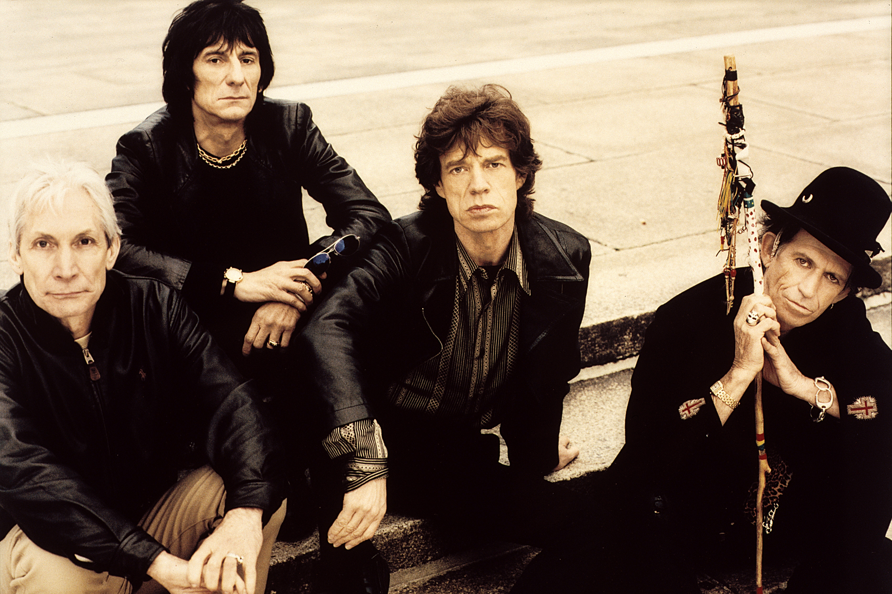

- The Gamechangers: Pink Floyd
- The Bad Kids: Rolling Stones
- The millenial: Muse
- The New Generation: Keane
The beginners: The Beatles
The Beatles were the beginning of the era of rock in Europe, and with their own style, they infected the whole world with the new music that was taking over the radio stations.


Pink Floyd gave to the music the essence of improvisation and avant-garde. They broke paradigms and created a more dramatic and elaborate rock. Pink floyd were not afraid in experimenting wih new sounds and harmonies, in order to obtain a very special ambience in their concerts.


The Rolling Stones brought rebellion and defiance to music, at a time when young people wanted to rebel from institutions.
With a very clever and stilish manner, Muse were able to combine the spirit of the old glorious bands from the sixties, with the new sounds of the twenty first century.


The vocals, and the lyrics of Keane, makes this band one of a kind in the array of bands existing around the world, Tom Chaplin's voice is unique, and has been compared with Freddy Mercury.